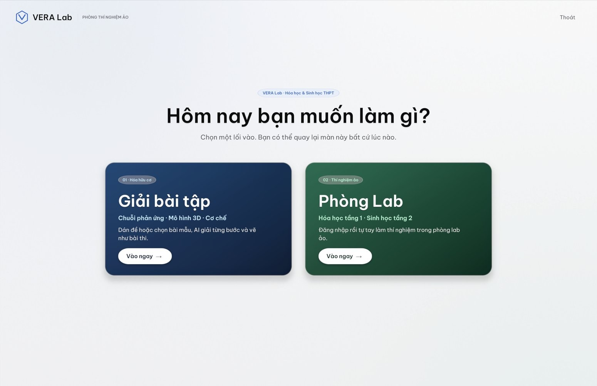
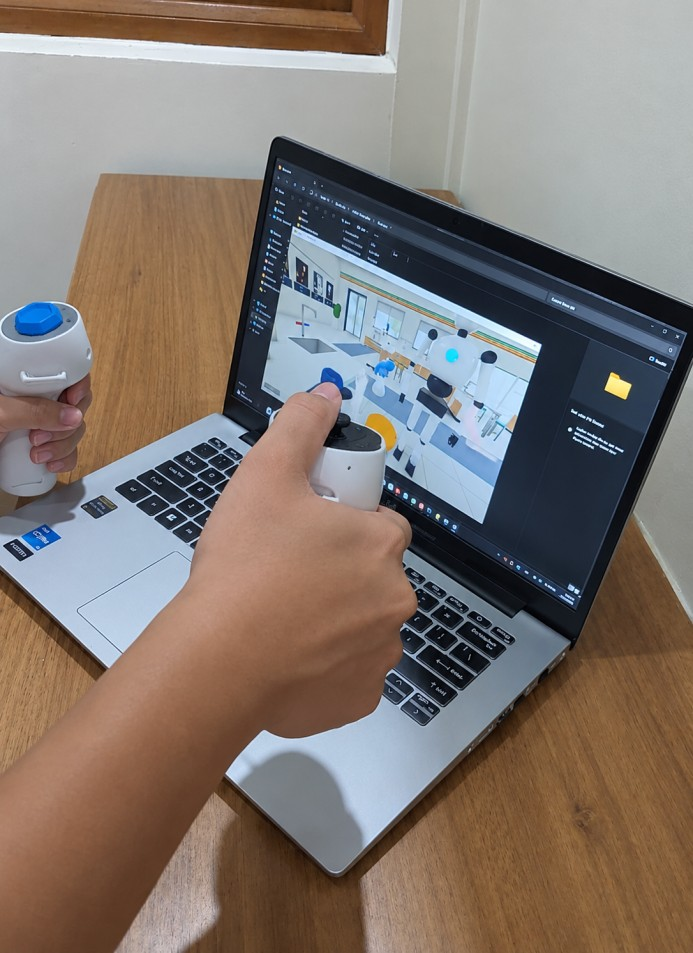
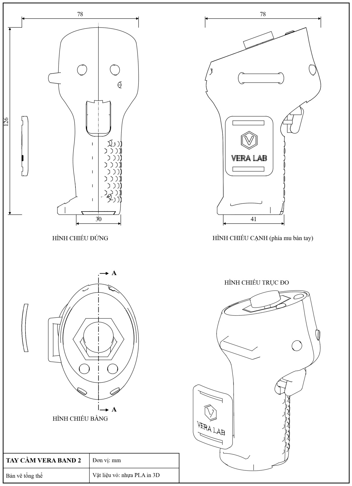
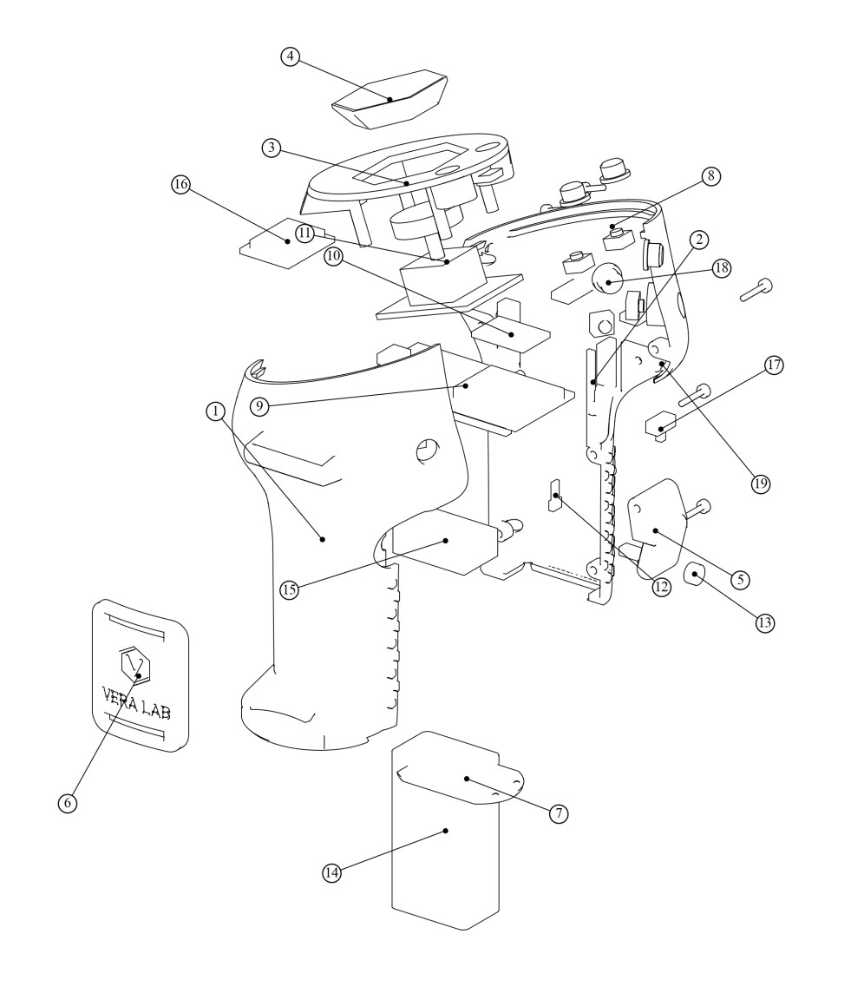

Tóm tắt
VERA Lab là tòa nhà thí nghiệm Hóa – Sinh 3D chạy trên máy tính. Học sinh đi lại, tự pha chế, vận hành máy phân tích; kết quả được tính từ chính thao tác của mình: làm đúng ra đúng, làm sai thấy hậu quả như thật.
Điều khiển bằng bàn tay qua webcam hoặc tay cầm VERA Band tự chế; trợ lý AI hướng dẫn và robot làm mẫu sau khi qua bộ kiểm tra an toàn. Chạy trên laptop phổ thông, không cần kính VR.


Đặt vấn đề
Thiếu thiết bị, hóa chất
Hóa chất đắt hoặc độc; máy GC-MS, NMR, SEM, PCR hầu như không có ở trường phổ thông, học sinh chỉ biết qua hình vẽ.
Không được phép làm sai
Vì an toàn, học sinh chỉ làm theo mẫu, hiếm khi thấy hậu quả của một thao tác sai.
Phần mềm chỉ phát lại
Nhiều phần mềm chạy hoạt cảnh dựng sẵn: làm gì kết quả cũng như nhau. Bản 3D thì trả phí, chưa có tiếng Việt.
Kính và tay cầm VR đắt
Mỗi học sinh cần một bộ kính kèm tay cầm, khó phổ cập trong trường phổ thông.
Vấn đề nghiên cứu
Làm sao xây dựng phòng thí nghiệm ảo mà kết quả do chính thao tác của học sinh quyết định, an toàn, được phép làm sai, điều khiển tự nhiên bằng bàn tay và chạy trên máy tính thông thường của nhà trường?
Mục tiêu
- 1Thực hành an toàn, lặp lại không giới hạn, không tốn hóa chất.
- 2Làm quen quy trình vận hành máy phân tích hiện đại.
- 3Có trợ lý AI và robot hướng dẫn đúng quy trình từng thiết bị.
- 4Điều khiển bằng bàn tay qua webcam và tay cầm tự chế.
- 5Giáo viên tổ chức, theo dõi lớp học qua web.
Phương án thiết kếSo sánh trước khi chọn: giống thật, chi phí thấp, chạy trên máy sẵn có
| Quyết định | Đã cân nhắc | Được chọn |
|---|---|---|
| Sinh kết quả | Hoạt cảnh dựng sẵn: không làm sai được | Tính từ thành phần mẫu: mọi thao tác đều có kết quả tương ứng |
| Điều khiển | Kính VR: đắt, mỗi học sinh một bộ | Webcam có sẵn + tay cầm tự chế: lớp nào cũng dùng được |
| Dáng tay cầm | Ống cầm, Halo, Drop, Arc: phải nắm liên tục, mỏi tay | VERA Band đeo qua mu bàn tay: thả lỏng không rơi, ngón tay tự do |
| AI và web | Máy chủ cá nhân: phải bật máy liên tục | Cloudflare cho lớp học; mô hình ngôn ngữ chạy tại máy hoặc trên mây |
Quy trình nghiên cứu

